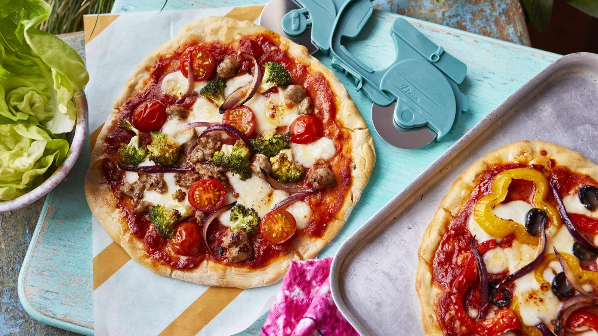

Pizza
Home

Description
With a few shortcuts you can make a delicious pizza from scratch in no time at all – dough, tomato sauce and all!
Ingredients
- 2 garlic cloves
- 2 tbsp olive oil
- 1 x 400g tin plum tomatoes
- 400g/14oz self-raising flour, plus extra for dusting
- 80g/2¾oz mozzarella
- 4 chipolata sausages (optional)
- 4 handfuls of your favourite vegetables, such as peppers, cherry tomatoes, sweetcorn, broccoli, onion, black olives
- salt and black pepper
Method
- Peel and finely slice or grate the garlic, then place in a pan on a medium heat with 1 tablespoon olive oil and fry until golden.
- Scrunch in the tomatoes using your hands to break them up (or tip in and break up with a spoon as you go). Simmer for 5 minutes, or until thickened slightly, then season to taste with salt and black pepper. Remove from the heat.
- Preheat the oven to 220C/200C Fan/Gas 7 and rub the inside of a 25x35cm/10x14in baking tray with olive oil.
- Put the flour and a pinch of salt into a mixing bowl and make a well in the middle.
- Pour 250ml/9fl oz water into the well, then use a fork to stir and bring in the flour from the outside to form a dough – when the dough comes together and becomes too hard to mix with your fork, dust your hands with flour and begin to pat it into a ball.
- Knead on a flour-dusted surface for a few minutes, or until smooth and elastic.
- Divide the dough into 4, then roll and stretch the pieces into 20cm/8in rounds or ovals.
- Spread each base generously with the tomato sauce and tear over the mozzarella.
- Squeeze the sausagemeat out of the skins and tear over the pizzas (if using). Prepare your chosen vegetable toppings (cut into bite-sized pieces) and scatter over the pizzas.
- Drizzle lightly with olive oil, then cook on the top shelf of the oven for 10 minutes, or until golden and puffed up. Delicious served with a crunchy green salad.